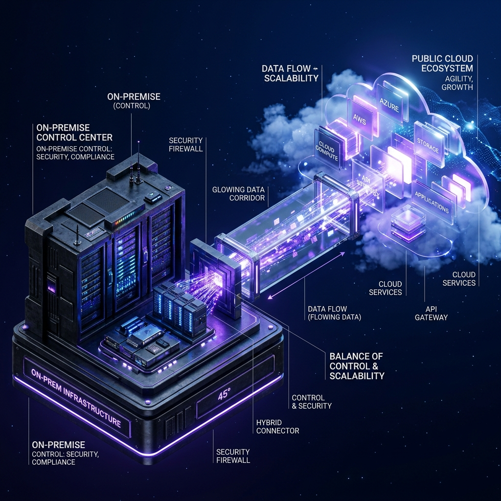

1.6.3 Nube Híbrida: El Equilibrio Estratégico
Lo mejor de dos mundos: control on-premise y potencia elástica pública
El modelo de nube híbrida integra infraestructuras locales (on-premise) con servicios de nubes públicas o privadas. Para las organizaciones que manejan Big Data, este enfoque no es solo una opción técnica, sino una necesidad estratégica que permite equilibrar el control absoluto sobre los datos críticos con la flexibilidad infinita del cloud.
Este ecosistema permite que la localización del dato, la latencia y la confidencialidad sean gestionadas de forma granular según la naturaleza de cada carga de trabajo.

Sinergia de Infraestructuras
¿Qué es la Nube Híbrida?
Representa la unión perfecta entre la seguridad de los sistemas tradicionales locales y la capacidad de innovación de la nube pública. Permite a las empresas ejecutar sus operaciones críticas de negocio en servidores propios (garantizando el cumplimiento normativo más estricto) mientras delegan las tareas analíticas pesadas y el almacenamiento de datos históricos a la nube, optimizando costes de forma inteligente.
Por qué elegir un enfoque híbrido
Control y Soberanía
Mantenimiento de datos sensibles y regulados bajo control directo en servidores locales.
Escalabilidad Analítica
Capacidad de "desbordar" hacia la nube pública para ráfagas de procesamiento masivo sin invertir en hardware fijo.
Explorando las ventajas competitivas
En las siguientes lecciones analizaremos cómo la nube híbrida mejora la flexibilidad operativa, optimiza los costes, asegura la continuidad del negocio y facilita el cumplimiento de normativas complejas.